Предметом нашего исследования стала одна из областей массовой культуры, а именно - корпус развлекательных и прикладных русскоязычных текстов (далее сокращенно - попса). На наш взгляд, изучение этой обширной и горячо любимой старшими поколениями темы должно заслужить особого внимания и среди молодых исследователей.
Чтобы достичь наиболее показательных результатов и сузить круг источников, было решено остановиться на изучении текстов песен, которые были признаны как “песни года” специальными экспертами премии “Золотой граммофон”. Премия была основана в 1996 году и продолжает функционировать и сейчас. Таким образом, мы анализировали песни во временной период от 1996 до 2000 года.
Для исследования поэтики песен и построения дальнейшей системы эволюции всей премии и в частности ее лауреатов нами были использованы качественные и количественные методы исследования корпуса, с помощью которых мы выявили ряд интересных закономерностей. В работе мы использовали следующие инструменты:
Мы проанализировали названия треков и на основании текстов песен выявили основные тематические группы.
Среди названий лидируют предметные категории: например, Quest Pistols — «Белая стрекоза любви» Серёга — «Миллион долларов США»
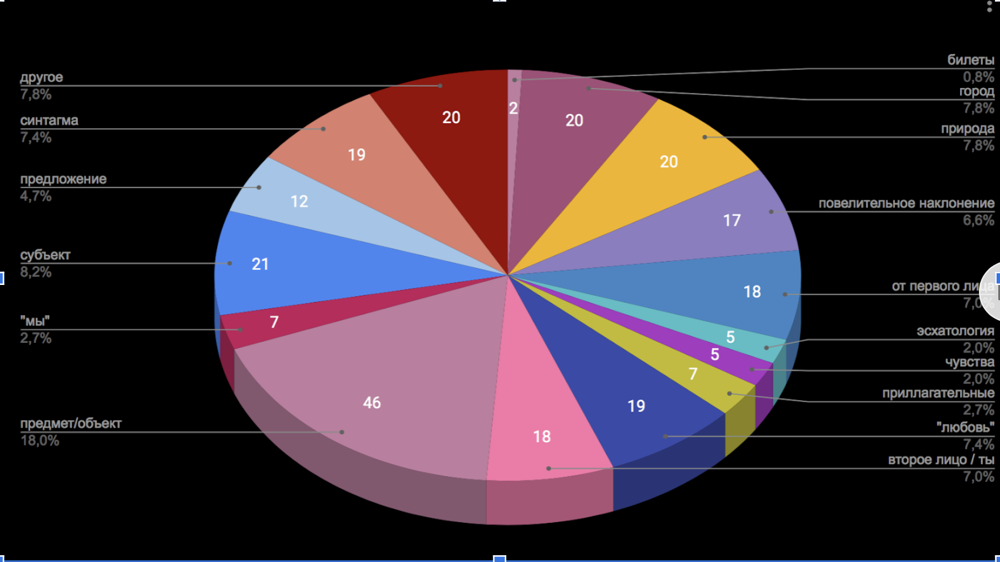Чаще всего песни поют про любовь: несчастную, прошедшую и счастливую
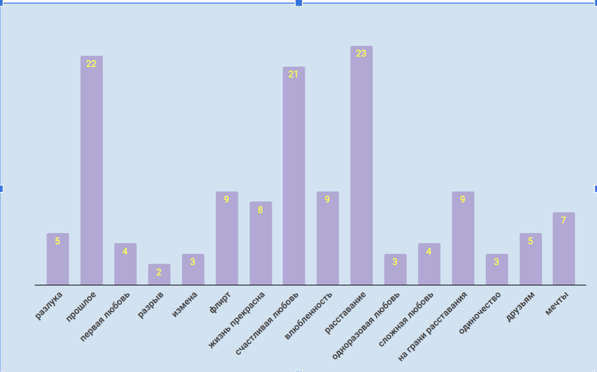А еще интересно распределение речи в монологических треках:
Далее мы решили выделить первые 17 частотных слов в текстах песен за каждый год по отдельности и за все года вместе, заранее проанализировав темы песен и выделив в каждом году одну основную.
Мы убрали местоимения из списка стоп-стол, потому что посчитали, что они являются неотъемлемой частью поэтики шансона. Местоимения “ты” и “я” почти каждый год занимают в списках на первых позициях. Скорее всего таким образом авторы приближают слушателя к происходящему в песне, делают так, чтобы он ассоциировал себя с событиями в ней.
В топ 10 песен за 1996 год превалировала тема любви, и в текстах появляются характерные для нее слова-символы: сон, любовь один. Последнее говорит о том, что тема любви в 1996 раскрывается в песнях как со знаком плюс, так и со знаком минус.
В 1997 году превалирующая тематика песен более узкая - несчастная любовь. Здесь снова появляется слово “один”, а также у слов прослеживается коннотация незаконченности действия - “хотеть сказать”; слово “оглянуться” - явный символ разлуки.
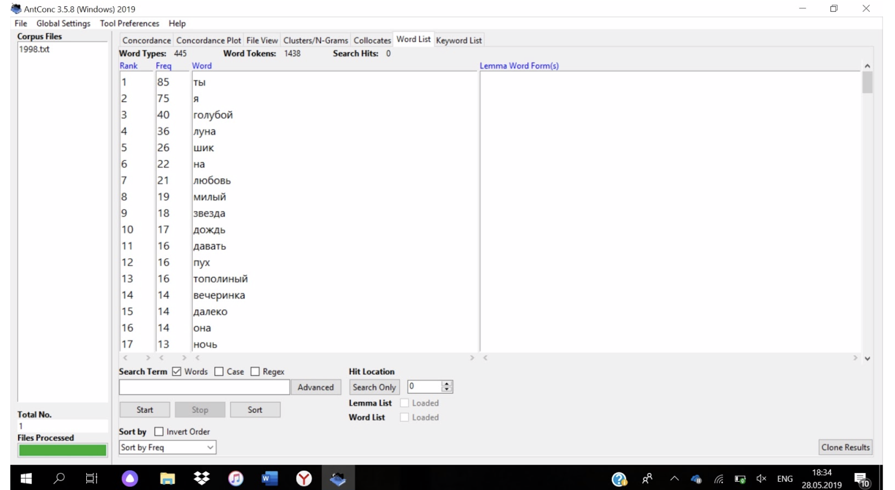В 1998 году повторяется та же превалирующая тематика песен, что и в 1996 - любовь, однако частотные слова наделены более позитивной коннотацией: например, “шик” и “милый”.
В песнях 1999 года снова превалирует тема несчастной любви, а в текстах появляется яркое слово, которое точно характеризует всю проблематику темы - “паранойя”.
В 2000 году снова общая тематика песен - любовь, и слова снова наделены в основном положительной коннотацией, как в 1998 году.
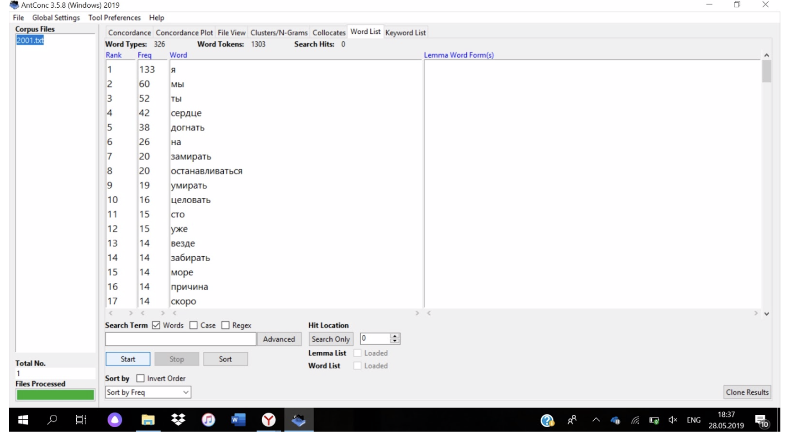В 2001 году в песнях превалирует тема любви, ушедшей в прошлое. В списке частотных слов хорошо прослеживается указание на некий символический конец, подразумевающийся тематикой: “сердце”, “замирать”, “останавливаться”, “умирать”.
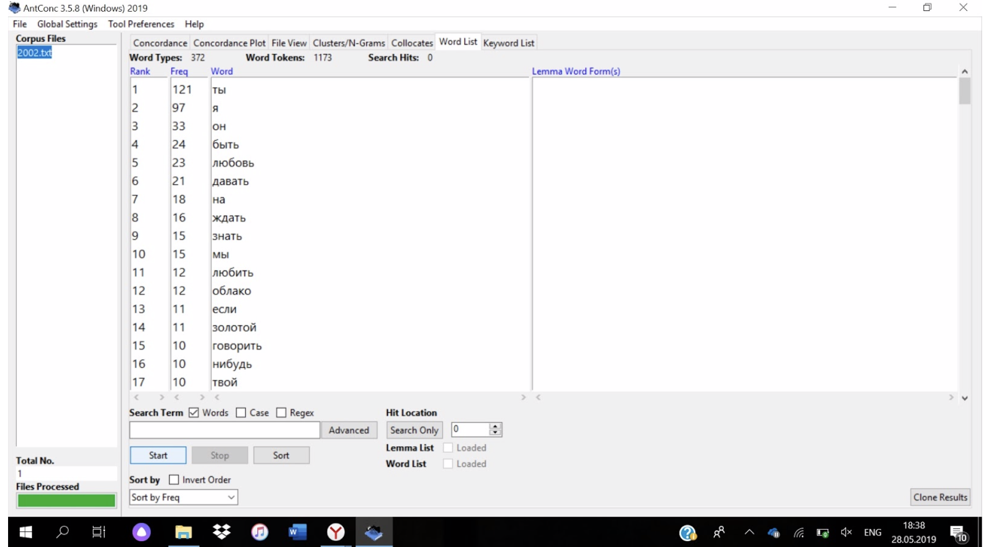В 2002 году песни пишутся в основном на ту же тему, что и в 2001 - любовь, ушедшая в прошлое; разочарование в ней. Но частотные слова более нейтральны.
В 2003 году мы видим превалирование темы несчастной любви, на что указывает такое слово из текстов, как “боль”.
Тематика потерянной любви в песнях 2004 года, к сожалению, по-особенному не отразилась на списке частотных слов.
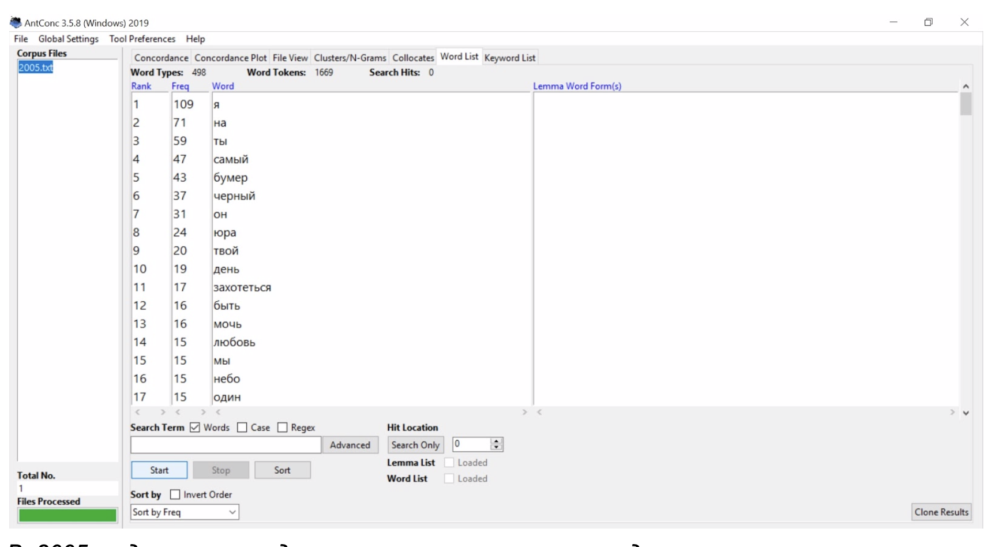В 2005 году выявить доминирующую тематику среди корпуса песен не представляется возможным.
В 2006 году превалирующая тематика - короткая любовь/флирт, но интересно, что среди списка частотных слов появляется слово “свадьба”.
Интересно, что в 2007 году, где превалирующей тематикой песен стало расставание, среди самых частотных слов встречается “встреча”.
В 2008 сложно определить узкую тематику песен - тексты этого года могут рассказывать как о несчастной, так и о счастливой любви.
Песни 2009 года в основном посвящены теме расставания, на что указывают слова “молчать”, “один”, “прощать”.

В песнях 2010 года культивируется спасительная сила любви, ее положительные стороны и функции. На это указывают такие слова, как “мир”, “хороший”, “белый”(цвет мира).
В 2011 году песни поются о короткой, но счастливой любви: “чумачечий”, “весна”, “роман”.
В 2012 году список частотных слов также хорошо иллюстрирует самую популярную тематику песен - любовь в прошлом. Например, очень характерно здесь слово “забывать”.
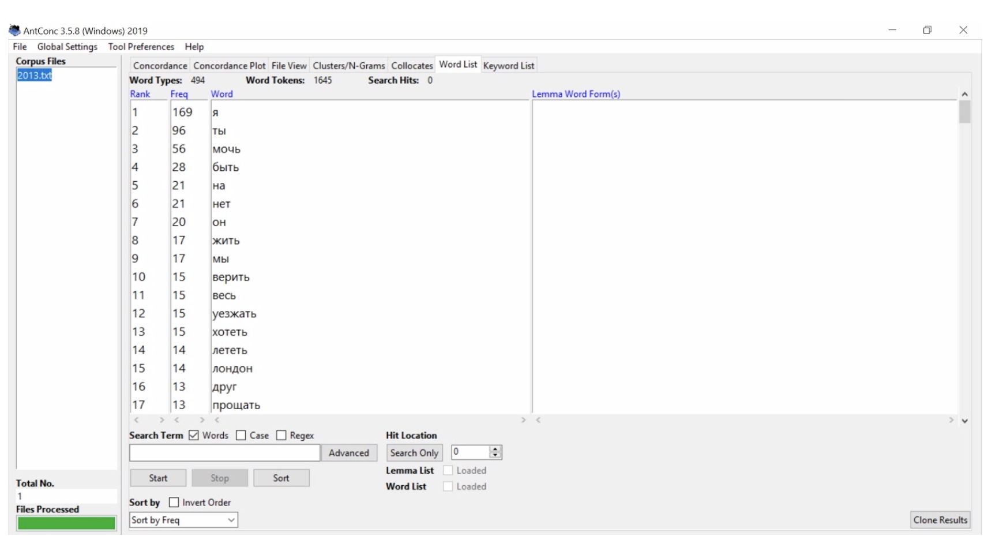В 2013 году снова стала популярной тема любви вообще - частотные слова не поддаются анализу и могут относиться к совершенно противоположным темам.
Интересно, что в списке частотных слов за 2014 год даны отвлеченные понятия, хотя основная тематика года - расставание.
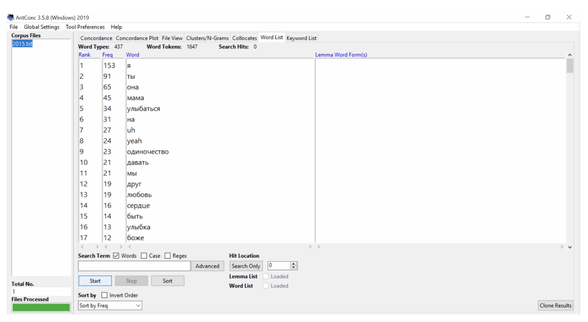Основная тематика песен 2015 года - разрыв, любовная неудача, но частотные слова не полностью с ней согласованы. Так, в списке присутствует слово “одиночество” наравне со словами “улыбка” и “улыбаться”.
В 2016 году превалируют песни о счастливой любви, а в ключевых словах нет ничего неподходящего по тематике.
В песнях 2017 года снова превалируют песни о любовном разрыве, об ошибке. Эта тема будто утрируется ключевым словами “близкий” и “один”.
В 2018 году снова пишутся песни в основном на тему любви вообще - в списке частотных слов наравне присутствуют понятия, относящиеся к разным полюсам этого понятия: например, “один” и “красиво”.
Собрав все тексты песен вместе мы выяснили, что самой популярной темой среди них является тема расставания. Ключевые слова очень удачно согласуются с тематиков, выстраиваясь в своеобразное предложение о неразделенной любви.

Исследование корпуса не только довольно полезный инструмент для осмысления и анализа текстов, но и обширное поле для наблюдения формирования канона русской попсы. Из списка всех лауреатов “Золотого граммофона” нами были выделены три “абсолютных чемпиона”, получивших наибольшее количество статуэток. Ими оказались:
Ф. Киркоров: 23 статуэтки Н. Басков: 15 статуэток В. Меладзе и Г. Лепс: по 14 статуэток
Количество полученных наград, распределенное по годам этими артистами, представлено на следующем графике:

Чтобы расширить контекст нашего исследования, с помощью НКРЯ и Google Ngram мы проанализировали частотность упоминаний этих исполнителей. Временной период, изображенный на диаграммах: 1996-2018 г (все время существования премии) для НКРЯ, и 1996-2008 для Google Ngram, где данные в русскоязычном корпусе представлены только до 2009 года.
Первые графики, иллюстрирующие частотность упоминаний Киркорова, в целом согласуются с данными о полученных статуэтках. Два пика популярности писателя (первый: около 1998 года и до 2003; второй: около 2012) проявились на обоих графиках. Примечательно, что также спад популярности Киркорова к 2010 году перед новым подъемом также проявился и в отсутствии статуэтки за 2010, и в нулевых показателях графика в интервале 2007-2010.
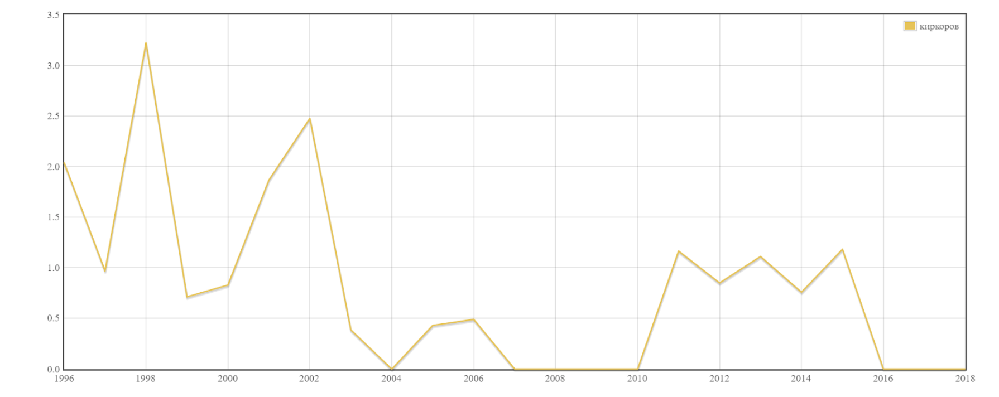Появление Н. Баскова на русской эстраде и рост его популярности в начале 2000-х ярко отражен на графике из Google Ngram, где кривая достигает своего максимального показателя в 2004, что также является годом получения первой статуэтки ЗГ певцом. Десятилетие стабильности в его творчестве с 2004 по 2014 согласуется с умеренным ежегодным получением премии перед новой волной популярности после 2015, которая, по мнению экспертов “Золотого граммофона”, полностью показала себя к 2018 году, ставшего для Баскова действительно “золотым” - певец получил целых три статуэтки за одно награждение.
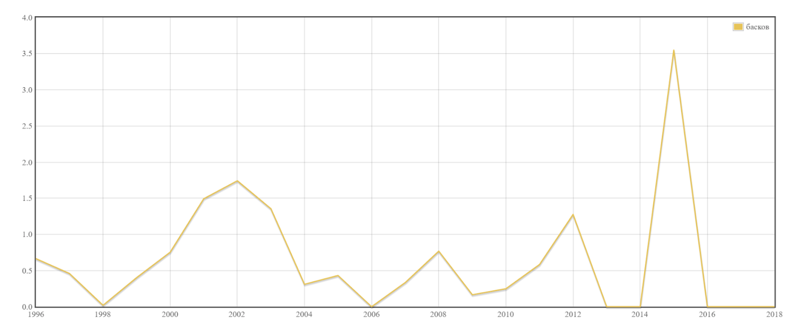 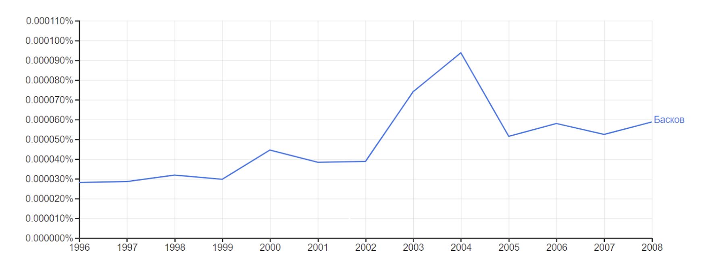В случае с В. Меладзе, несмотря на то, что все графики разительно отличаются друг от друга внимание стоит уделить моментам подъема: на пике на графике НКРЯ оказывается период после 1996 (первая статуэтка Меладзе), а на графике из Google Ngram как раз отразился момент уверенного “становления” певца после получения второй статуэтки в 2000 и периода после небольшого спада (по меркам “Золотого граммофона”) в 2001-2002 гг. Пик популярности после 2014, на наш взгляд, связан с чрезмерно активным вниманием студентов “Высшей школы экономики” к творчеству певца.
Первый раз Г. Лепс получает две статуэтки за награждение одного года в 2011 году. Диаграмма НКРЯ ярко иллюстрирует рост популярности певца с начала 2010-х. Пик популярности накануне 2016 года, показанный на графике, как раз предшествует получению сразу трех статуэток Лепсом. Однако исследовательский интерес вызывают и данные графиков до 2006 года, показывающие изменения популярности автора до того, как он впервые стал лауреатом премии.
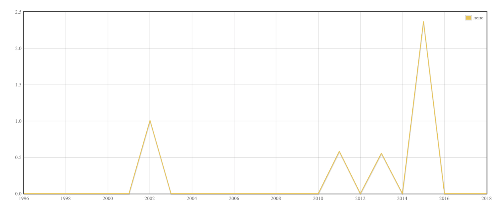 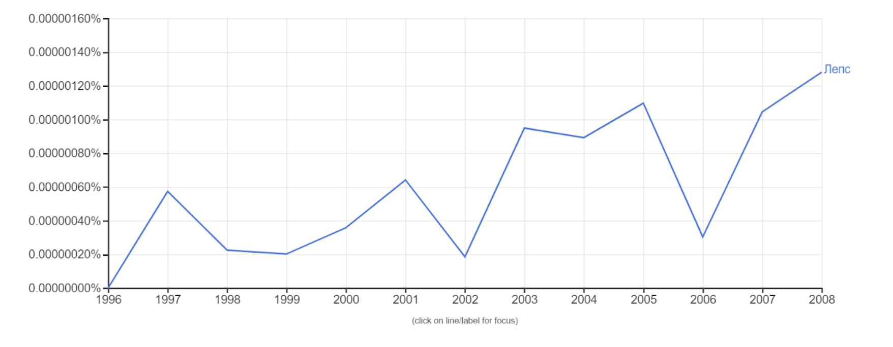Помимо рассматриваемого корпуса, мы решили взглянуть на весь «Золотой граммофон», а именно на дуэты, которые награждались. Проанализировав источник, мы выявили 76 пар, что на самом деле достаточно много, если принимать во внимание тенденцию на персональное выступление. 23 пары - выступали (следовательно и были награждены) по одному разу и лишь с одним партнёром. Гораздо больше представлено дуэтов, которые если и не выступали по многу раз, то как минимум образовали тройки, четвёрки и целые сети связей. Прежде чем перейти к лидерам, взглянем на “тройки”, в которых есть как и достаточно стандартные и привычные слушателю пары, так и необычные (Виктория Дайнеко и Любе). Куда более интересными оказываются две “четверки”: одна, в центре которой Леонид Агутин, интересна тем, что в ней - самая сильная и толстая связь (граф у нас всё-таки взвешенный) между Агутиным и Анжеликой Варум, которые выступили 6 раз. Другая четрёрка интересна своим "лидером": Борисом Моисеевым, концентрирующим на себе Н. Трубача, Н. Фернандес и Л. Гурченка, что наиболее интересно. Самые же главные и центральны по количеству связей певцы - Николай Басков и Григорий Лепс. ПРичём Лепса мы ставим выше, так как Gephi выделил одну из "веток" Баскова в другой цвет, что немножно ослабляет его связи. К концу отметим интересный факт Г. Лепса: он чаще всего поёт в дуэте с молодыми исполнителями, что также может обосновывать его популярность.